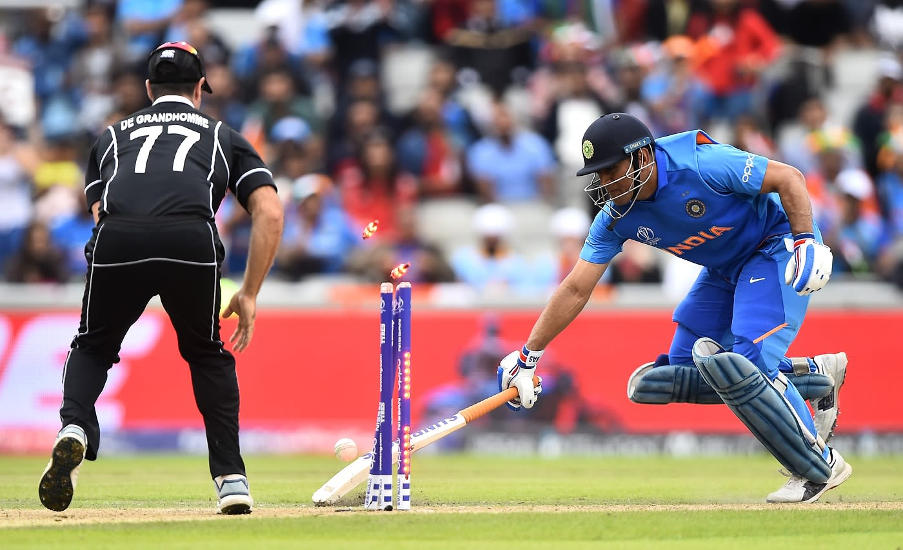
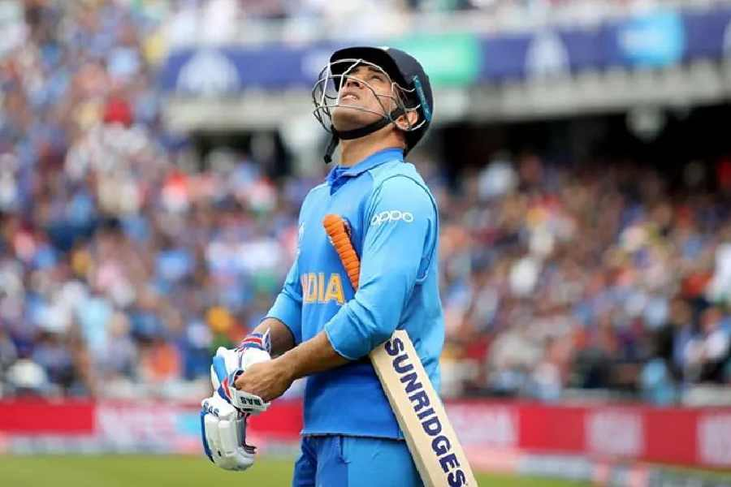

The Throw That Stopped Time
There are certain moments in sports that transcend the game itself. They stop being just a passage of play and transform into a collective national trauma. If you ask any Indian cricket fan exactly where they were on July 10, 2019, they won't have to think twice. They remember the room, they remember the people they were sitting with, and they remember the exact sickening feeling in the pit of their stomach.
It was the 49th over of the ICC World Cup Semi-Final at Old Trafford, Manchester. The equation, which had looked completely impossible an hour earlier, had miraculously boiled down to something manageable: 25 runs needed off 10 balls.
MS Dhoni was on strike. Lockie Ferguson, bowling absolute thunderbolts, delivered a short ball. Dhoni pulled it, but not with power. He merely guided it into the deep square-leg region. It was a guaranteed single. But this is MS Dhoni. Even at 38 years old, his mind calculated the fielding angles faster than any supercomputer. He called for two.
And then, Martin Guptill intervened.
Guptill picked up the ball from the deep. He had precisely one stump to aim at. He threw the ball with the desperation of a man who knew his country's World Cup dreams depended on it. The ball hit the stumps directly. MS Dhoni, the fastest runner between the wickets in the history of the sport, was short by approximately two inches.
The stadium fell completely silent. A billion televisions in India seemed to lose their color. And when the giant screen flashed the big red "OUT", MS Dhoni bowed his head and began the longest walk back to the pavilion of his life. Tears were visible in the eyes of a man who had famously never shown emotion on a cricket field. That throw didn't just end a match; it violently closed the chapter on an entire era of Indian cricket.
The Invincibles Before The Storm

To truly understand the depth of this heartbreak, you have to remember how dominant India had been leading up to that day. This wasn't a team scraping through to the semi-finals. This was a juggernaut.
Under Virat Kohli's aggressive captaincy, India had bullied their way to the top of the points table. They had dismantled Australia, humiliated Pakistan, and clinically brushed aside South Africa. Rohit Sharma was batting like a man possessed, scoring five centuries in a single World Cup—a record that still defies logic. Jasprit Bumrah was unplayable. The team looked so invincible that experts had already started debating how they would match up against England in the Final.
But underneath that sparkling invincibility, a tiny, fatal crack existed. It was a crack that everyone knew about but chose to ignore: the brittle middle order. India’s success was entirely dependent on their top three (Rohit, Kohli, Rahul). The number four position had been a revolving door of experiments—Ambati Rayudu was dropped, Vijay Shankar was injured, Rishabh Pant was flown in as a panicked replacement. As long as the top three fired, the crack remained hidden. But on July 10, the crack shattered the entire team.
The Reserve Day Curse: The Rule That Changed Everything
While Martin Guptill’s throw gets all the prime-time replays, the real tragedy of that match began the day before. Let's talk about the rule that nobody wants to remember but fundamentally altered the course of cricketing history: The ICC Reserve Day Playing Conditions.
When the match began on July 9th, New Zealand batted first on a pitch that was sluggish and slow, but generally playable. The Indian bowlers kept a tight leash on them, and New Zealand struggled to 211/5 in 46.1 overs before the skies opened up and rain halted play.
Under normal ODI rules in bilateral series, if the match couldn't resume, India's target via the DLS method would have been roughly 237 in 46 overs. It would have been challenging, but India was historically the best chasing team in the world. However, because it was a World Cup semi-final, the ICC activated the "Reserve Day" clause.
This is where the heartbreak truly began. The overnight rain and heavy, dark cloud cover on the morning of July 10th completely transformed the Old Trafford pitch. It went from a slow batting track to a seaming, swinging, terrifying minefield. The moisture had seeped into the surface. The heavy clouds provided a canopy that allowed the ball to hoop around corners. Trent Boult and Matt Henry didn't just bowl well; they bowled in conditions that were tailor-made for unplayable swing bowling. If the match had been reduced and finished on Day 1, India would have likely chased it down. The weather, quite literally, changed the script.
"45 Minutes of Bad Cricket"

Virat Kohli later summarized the defeat in the post-match press conference with a quote that would haunt Indian fans: "It was 45 minutes of bad cricket that put you out of the tournament." But calling it "bad cricket" is perhaps doing a disservice to the sheer brilliance of the New Zealand fast bowlers.
The collapse was swift, brutal, and horrifying to watch.
First went Rohit Sharma. A beautiful outswinger from Matt Henry took the outside edge. Out for 1.
Then came Virat Kohli. Trent Boult set him up with deliveries going across, before bringing one sharply back in to trap him LBW. Out for 1.
Then KL Rahul. Another edge off Henry. Out for 1.
In the space of 19 deliveries, the scoreboard read 5/3. The invincibles were gone. It was the lowest score at the fall of the third wicket in World Cup history for India. The silence in the stadium was deafening. Fans were looking at each other, trying to comprehend if their televisions had glitched. It felt less like a cricket match and more like a horror movie where the main characters are killed off in the opening five minutes.
Dinesh Karthik, sent in to stop the bleeding, survived for 25 balls before a stunning one-handed catch by Jimmy Neesham sent him back. India was 24/4. The dream was officially on life support.
The Jaddu Resistance: A Knight in Blue Armor
We cannot talk about this match without talking about Ravindra Jadeja. Before this game, a prominent commentator had infamously labeled Jadeja a "bits and pieces player." Jadeja took that comment personally, walked into the worst crisis in Indian cricket history, and almost pulled off the greatest miracle the sport has ever seen.
When Jadeja walked in to bat at 92/6, the match was mathematically dead. The required run rate was climbing out of control, and the pitch was still tricky. But Jadeja decided he was not going to die wondering.
His 77 off 59 balls was an innings of pure, unadulterated defiance. While MS Dhoni anchored the other end in his classic, cautious fashion—rotating the strike and absorbing pressure—Jadeja counter-attacked. He hit Trent Boult over his head. He launched Mitchell Santner into the stands. He played sweeps, pulls, and drives with the clarity of a man who had absolutely nothing to lose.
Every boundary he hit felt like a violent rejection of the script that had been written for them an hour earlier. For about 45 minutes, Jadeja made a billion people believe that logic didn't matter. He was a man possessed, fighting not just New Zealand, but the sky, the pitch, the commentators, and the weight of history. His sword-celebration after reaching fifty remains one of the most iconic images of defiance in Indian cricket.
The Inches That Mattered: MS Dhoni's Final Sprint
When Jadeja finally fell, skying a catch to Kane Williamson, the equation tightened drastically. But MS Dhoni was still there. And as long as MS Dhoni is at the crease in a run-chase, Indians do not panic. It is an unwritten law of the universe.
The first ball of the 49th over, Dhoni smashed Lockie Ferguson for a massive six over point. The crowd erupted. He looked set. He looked ready. The "finisher" had finally arrived at the exact moment he was needed. The calculation was simple: Dhoni would hit one more boundary, retain the strike, and finish it in the last over. It was the classic Dhoni template.
But then came the fateful third ball. The tap to square leg. The desperate sprint. Guptill's impossible throw.
People often debate with angry frustration: "Why didn't Dhoni dive?" It's a question born out of grief, not cricket logic. MS Dhoni almost never dives. His entire career's calculation was based on his sheer, explosive sprinting speed. Diving actually slows down your momentum and risks grounding the bat prematurely. On that specific delivery, he backed his legs to beat the throw. He was wrong by roughly two inches. Two inches that separated India from a World Cup Final.
The run-out wasn't just a dismissal; it was the cruelest possible interruption of a comeback story. It was poetry turning into tragedy in the span of three seconds.
The Aftermath and the Unhealed Scar
In the aftermath of the match, the post-mortem was brutal. Fingers were pointed at the team management for hiding MS Dhoni down the order at number 7. Critics blasted the selectors for never solidifying the middle order. Fans blamed the rain and the reserve day rule.
But the truth is, New Zealand didn't just beat India that day; they broke a team's spirit. It took years for the Indian ODI team to rebuild its identity, to construct a middle order (with players like Shreyas Iyer and KL Rahul in the middle) that wouldn't collapse when the openers failed. It took a whole World Cup cycle to heal the structural flaws exposed in those 45 minutes at Old Trafford.
Every great team that wins a World Cup carries scars from past failures. For India, Manchester 2019 is the ultimate scar. It is a reminder that in cricket, you can do everything right for six weeks, you can be the best team in the world, and yet, a cloudy morning, a swinging ball, and a brilliant piece of fielding can take it all away.
We will never forget where we were when Martin Guptill threw that ball. And perhaps, that is the true beauty and horror of the game of cricket.
Frequently Asked Questions
Who ran out MS Dhoni in the 2019 World Cup semi-final?
Martin Guptill ran out MS Dhoni with a stunning direct hit from deep square leg during the crucial 49th over of the 2019 World Cup semi-final against New Zealand. He had only one stump to aim at.
Why was the 2019 semi-final played over two days?
Rain interrupted the match on the originally scheduled day during New Zealand's innings (July 9). The ICC playing conditions mandated a reserve day, forcing India to bat the next morning under heavy, overcast conditions that massively favored swing bowling.
Did MS Dhoni cry after getting out?
Yes. While MS Dhoni rarely shows emotion on the field, television footage clearly showed him tearing up and looking devastated as he walked back to the pavilion. It remains one of the most heartbreaking images in cricket.
How many runs did Ravindra Jadeja score in the 2019 semi-final?
Ravindra Jadeja scored a heroic 77 runs off just 59 balls, hitting 4 fours and 4 sixes, nearly pulling off an impossible chase for India after they were reduced to a dismal 92/6.
What was the score when India lost their first three wickets?
India was reduced to a shocking 5/3 in just 3.1 overs. Rohit Sharma, Virat Kohli, and KL Rahul were all dismissed for exactly 1 run each by the brilliant opening spell of Trent Boult and Matt Henry.
Was it MS Dhoni's last international match?
Yes, the 2019 World Cup semi-final against New Zealand ended up being MS Dhoni's final match for the Indian national team. He officially announced his retirement from international cricket a year later on August 15, 2020.